That awkward little space above the fridge can make an otherwise beautiful kitchen look unfinished.
The good news: you don't need a renovation to fix it. The right basket, tray, a little artwork, or a few well-chosen kitchen pieces can turn that forgotten gap into a part of the room that actually works.
I've found the space works best when you treat it like a small styling zone, not a random shelf you toss things onto. That one shift in mindset changes everything. Instead of stacking cereal boxes up there and hoping nobody looks, you end up with a spot that reads as intentional.
So where do you start? Pick one question first: do you want this space decorative, functional, or a bit of both?
Answering that honestly before you buy a single thing saves you from ending up with a pretty arrangement that doesn't actually solve any of your storage problems, or a practical setup that still looks unfinished.

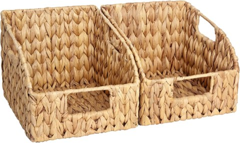
StorageWorks Pantry Baskets for Organizing, Wicker Basket with Built-in Handles, Handwoven Wicker Storage Baskets, Water Hyacinth for Shelves, 2 Pack
Shop on Amazon
Styling Above a Stainless Steel Fridge
Stainless steel pairs especially well with warm materials.
Reach for wood, woven baskets, cream ceramics, or muted greenery before you add more shiny metal. Softer textures balance out that cooler surface.
For a modern kitchen, try one simple wooden tray with a single ceramic vase.
For farmhouse, add a woven basket and an oversized cutting board.
For minimalist, skip the collection entirely and let one sculptural object do the talking.
The fridge already brings plenty of visual presence on its own. Your decor should support that, not compete with it.
If you're genuinely unsure where to start, pick the warmest material you already own somewhere else in the kitchen and bring a small amount of it up there first.
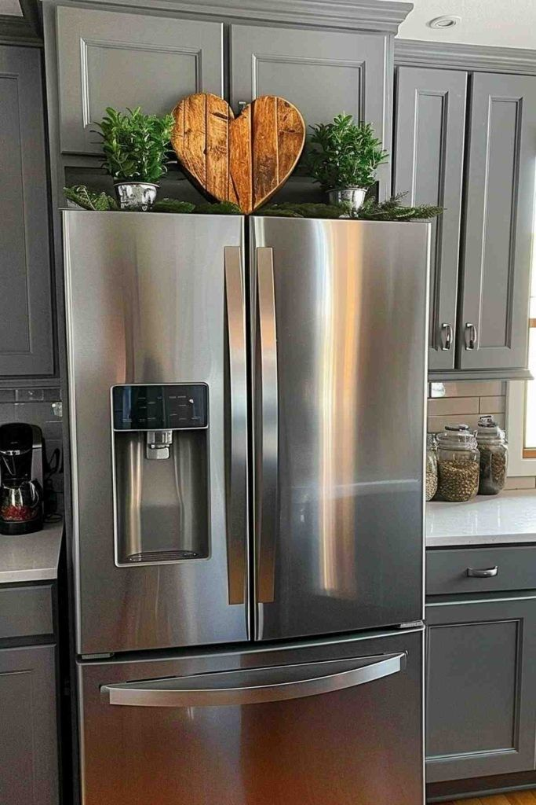
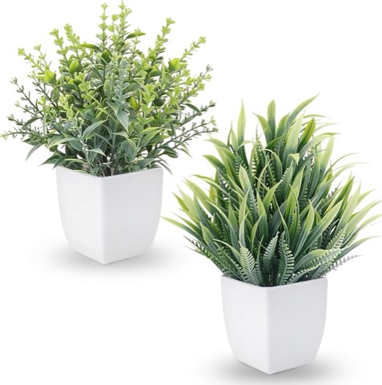
2 Pack Small Fake Plants, Mini Artificial Greenery Potted Faux Plants for Indoor Home Room Office Kitchen Farmhouse Bathroom Desk Shelf and Table Decor
Shop on AmazonStyling a Small Space Above the Fridge
Only a few inches to work with? Don't force a complicated arrangement into it.
One shallow tray, a small decorative bowl, or a low-profile basket is plenty. You can also just leave it empty if the fridge already sits neatly within the surrounding cabinetry.
Sometimes negative space is better design than one more accessory crammed in.
If there's a cabinet directly above your fridge, focus on that instead. A beautiful finish, the right hardware, or a decorative treatment on the cabinet itself does more than trying to squeeze objects into a tiny gap.
A small object chosen with real care will always beat three mismatched ones fighting for the same few inches of space.
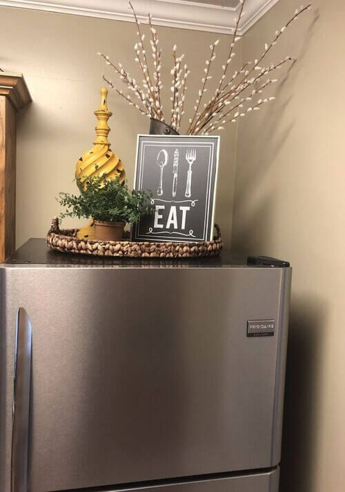
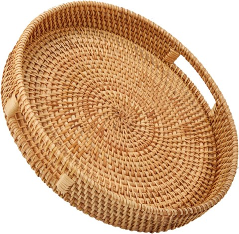
Round Rattan Serving Tray with Handles, Hand Woven Basket, Home Decor Organizer Tray for Breakfast, Tea, Snack, Fruit, Coffee,Storage (Medium)(11.9inchX1.7inch)
Shop on Amazon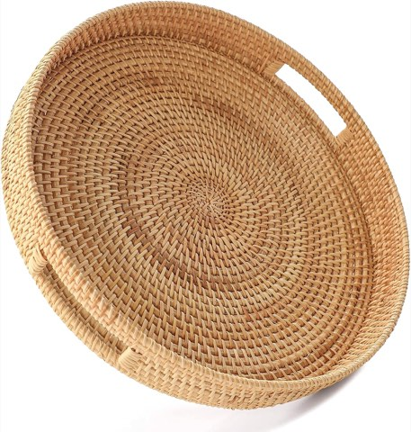
HITOMEN 11.8" Hand-Woven Round Rattan Serving Tray Decorative Wicker Trays with Handles for Coffee Table (Natural-M)
Shop on AmazonWhat Not to Put Above the Fridge
Styling the space doesn't mean anything goes.
Skip heavy objects that could shift or fall when the fridge doors open and close. Skip anything that blocks ventilation, and don't ignore your specific appliance's clearance requirements.
And don't turn the top of the fridge into a dumping ground for things you don't know where else to put.
If you haven't touched something in two years, putting it above the fridge won't magically turn it into decor.
It'll just be the same clutter, now sitting somewhere harder to reach and dust.
- Too many small objects. They read as clutter fast.
- Random, unrelated colors. They make the kitchen feel disconnected.
- Oversized pieces. They make the fridge look even bigger than it already is.
- Dust magnets. Open decorative objects need regular cleaning, or they stop looking styled.
- Blocked ventilation. Always check your specific model's clearance requirements first.
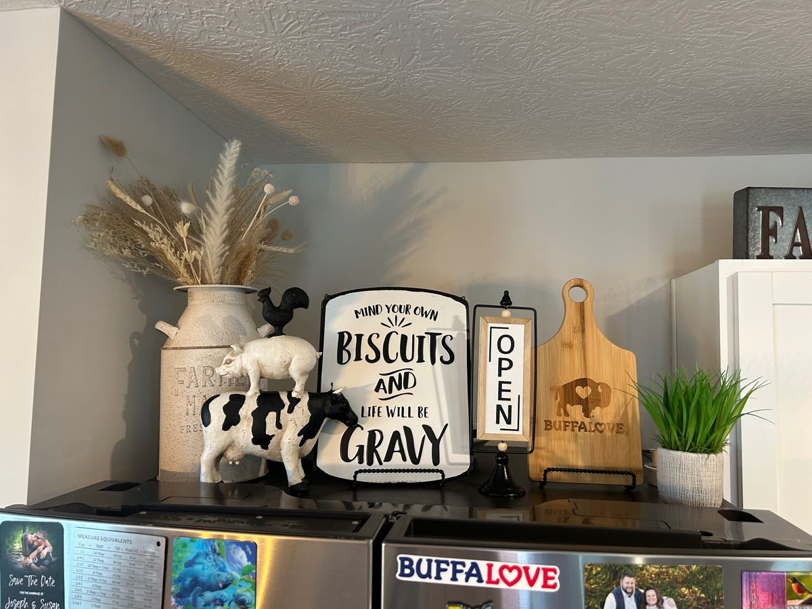
How to Make It Look Expensive
You don't need expensive accessories to make this space look polished.
The real difference comes from editing. Fewer pieces, materials that repeat somewhere else in the kitchen, and enough breathing room around each object.
If your kitchen already has brass hardware, bring in one small brass detail up there. Oak floors? Add a wooden board. Woven bar stools? Repeat that texture with a basket.
Designers lean on repetition constantly to make separate elements feel connected. You can do the exact same thing, no consultation fee required.
It's a trick that costs you nothing but a little attention to what's already in the room.
- Repeat colors that already exist in the room.
- Mix in two or three textures, not more.
- Vary the heights of what you're displaying.
- Leave real breathing room. Don't fill every inch.
- Keep anything heavy away from ventilation zones.
- Choose pieces that actually match your kitchen's style.
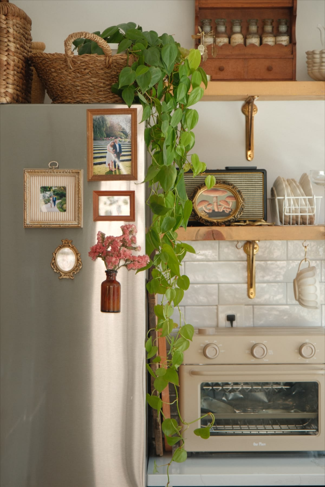
Novabright 8 Pcs Gold Vintage Picture Frames (8x10, 5x7, 4x6)
Shop on Amazon1. Build a Layered Farmhouse Display
For a cozy farmhouse kitchen, combine a few of these ideas into one carefully edited arrangement instead of picking just one.
Start with a large wooden cutting board at the back. Add a woven basket or a ceramic pitcher beside it. Finish with a small plant or a neutral bowl.
The important word here is layered.
You want different heights, textures, and shapes without tipping into chaos.
That principle holds above the fridge too. When the materials echo what's already in the kitchen, the display reads as connected instead of randomly placed.
Step back after you've placed everything and check it from across the room, not just up close. That's the real test of whether a layered display is working.
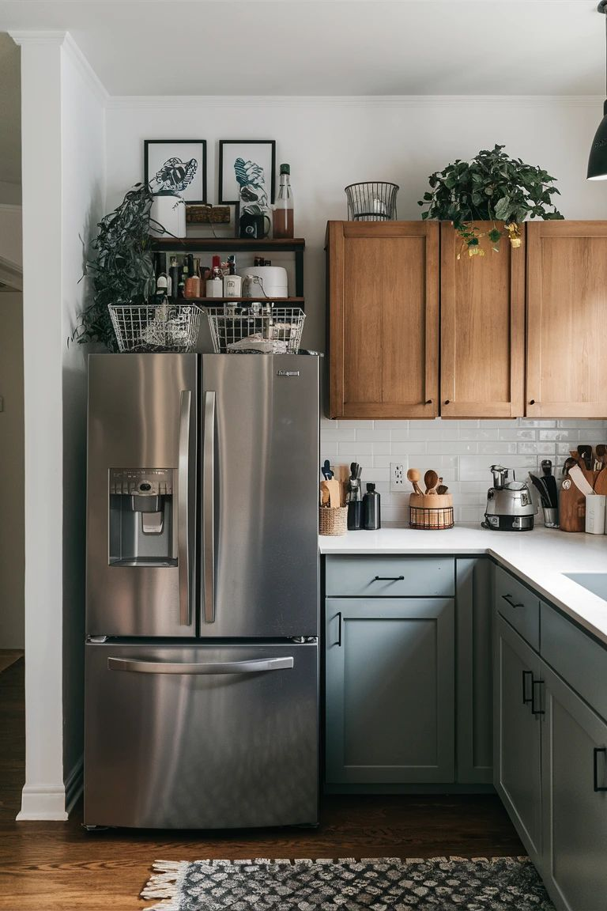
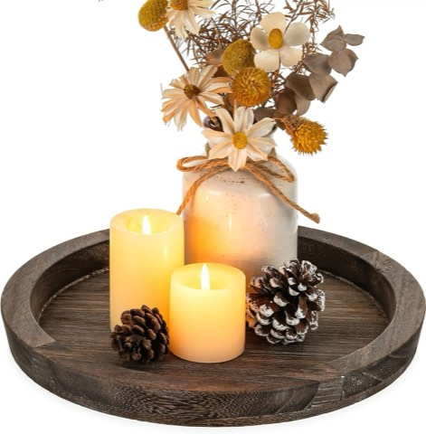
Hanobe Wooden Tray for Coffee Table, Decorative Round Candle Holder Plate
Shop on Amazon2. Turn It Into Hidden Storage
Not every above-fridge idea has to be purely decorative.
If your kitchen is short on storage, use the space for lightweight items you don't need every single day.
A matching basket or an attractive storage box can hide a surprising amount: seasonal kitchen linens, extra napkins, baking accessories, party supplies, reusable bags, lightweight serving pieces.
The trick is choosing containers you actually like looking at. A matching pair of woven baskets reads as intentional. Random plastic bins read as a small warehouse.
A small step stool kept nearby makes this idea far more practical day to day, since nobody wants to drag out a ladder just to grab extra napkins.
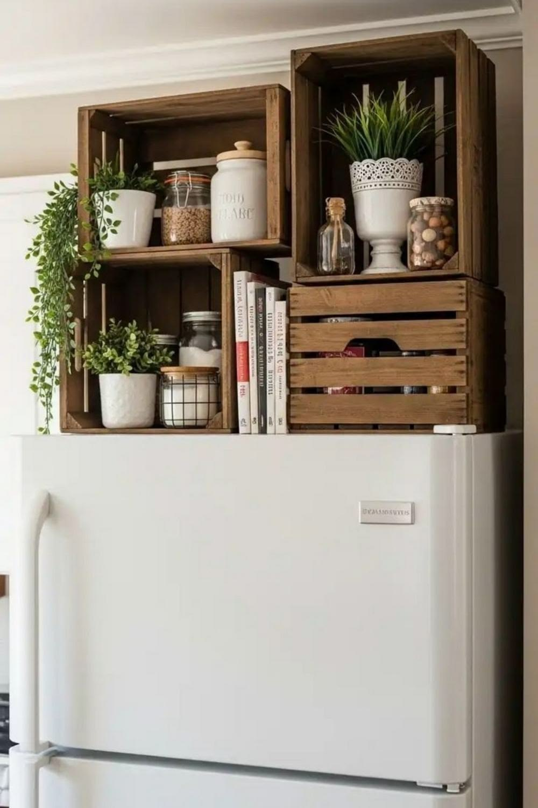
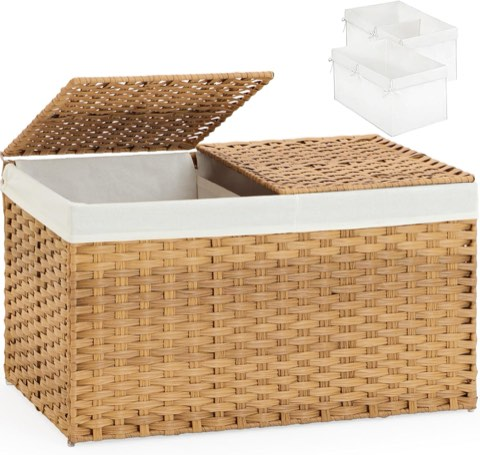
SETVSON Storage Basket with Lid Rattan Woven Storage Baskets with 2 Separate Lids, 17.2 Gallon (65 L), 22 x 13 x 13.8 Inches,Foldable, 2 Removable Liner Bags Handles for Bedroom, Laundry Room Natural
Shop on Amazon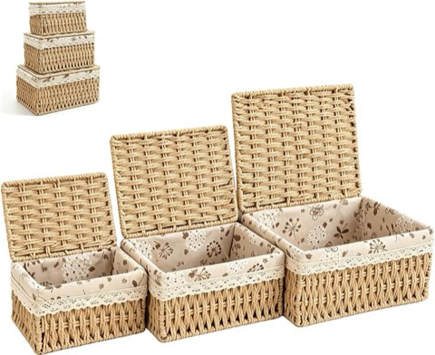
Wicker Storage Baskets with Lids, Set of 3 Nesting Natural Rattan Organizer Bins with Removable Liner, Decorative Woven Storage Boxes for Home Organization Bedroom Closet Shelves (Natural)
Shop on Amazon3. Build a Neutral Display
If you want a calm, sophisticated kitchen, keep this display neutral.
Stick to three or four related tones instead of introducing a lot of color: cream, beige, taupe, warm gray, natural wood all work together easily.
This works especially well when the fridge sits between white or neutral cabinets.
Try combining cream ceramic, natural wood, woven beige, warm white, soft greenery.
The goal isn't to make everything match exactly. Let the materials themselves create the variation.
Texture matters more than usual once your color palette is this limited.
A rough stoneware piece next to something smooth and glazed does more visual work in a neutral display than color ever would here.
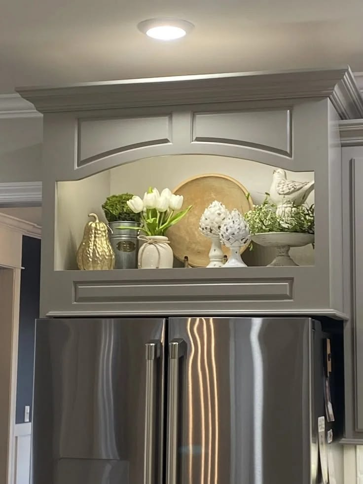
Distressed Finish Ceramic Bird Figurine Home Decor - Assorted Set of 3
Shop on AmazonBird Decor. Ceramic Animal Statues Bird Figurines Home Decor
Shop on Amazon4. Add a Decorative Vase
A vase above the fridge can instantly make the area look more finished.
Go tall if you have the vertical clearance. Go shorter and wider if the space feels compressed.
You don't even need fresh flowers. Dried branches, faux stems, eucalyptus, or simple greenery give you plenty of visual interest.
In a neutral kitchen, an off-white vase with warm wood and soft greenery creates contrast without introducing a whole new competing color.
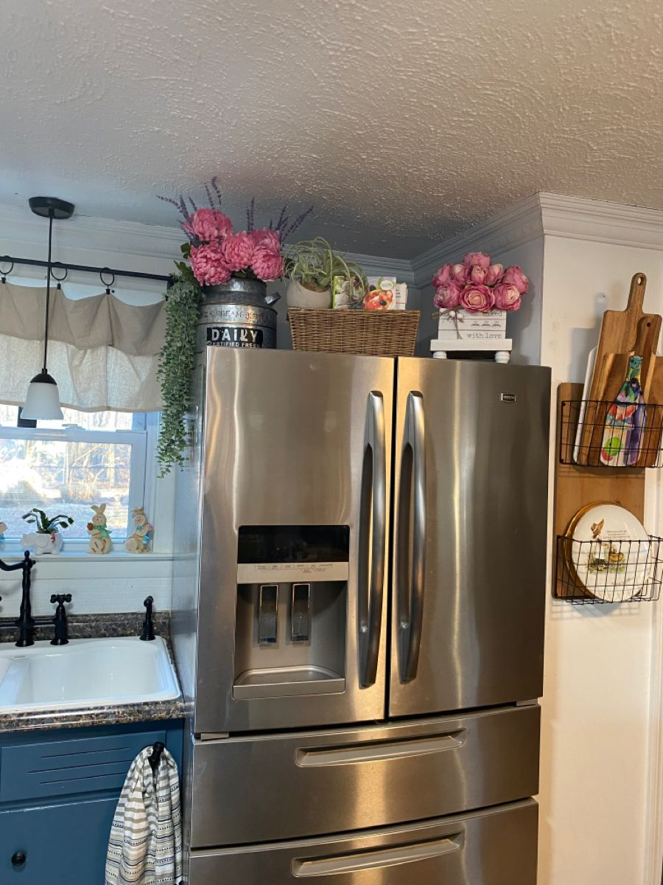
Modern Ceramic Vase Set, Neutral Colors, Decorative Vases for Home Decor, 4 Piece Collection (Beige)
Shop on Amazon
Vanselia Ceramic Flower Vase Home Decor - Small Farmhouse Table Vases Rustic Vintage Living Room Kitchen Bedroom Decorations for House Book Shelf Office Coffee Desk Dining Fireplace (6.3" Rustic)
Shop on Amazon5. Bring In Vintage Kitchen Decor
If you love character, use this space to display vintage kitchen pieces.
Think old-looking tins, ceramic pitchers, an antique-style scale, a vintage bread box, or a small decorative sign.
The key is choosing pieces that share a visual connection, rather than grabbing everything at once.
Try a vintage ceramic pitcher, an old-style wooden board, and a small brass container, together.
Don't randomly pile up every thrift-store find up there. There's a real line between collected and cluttered.
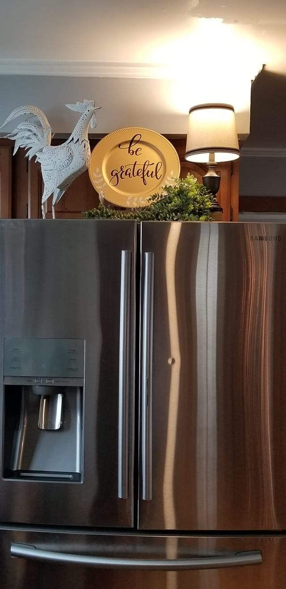
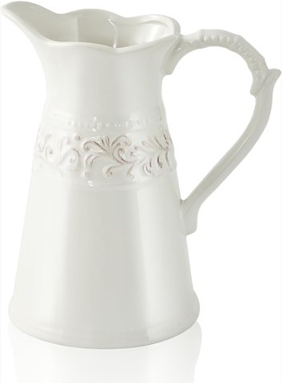
White Ceramic Pitcher Vase, Flower Pitcher,Farmhouse vase for Home Décor, 8.5inch Jug Vase.
Shop on Amazon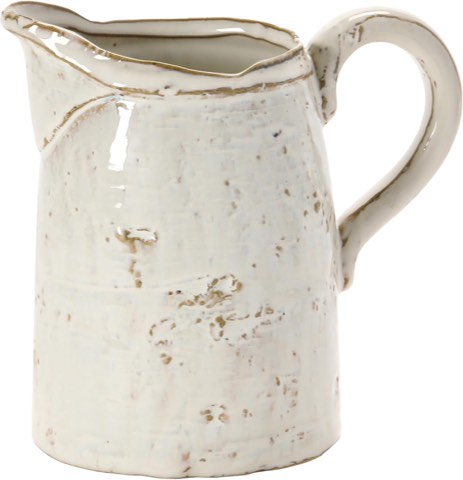
Creative Co-Op 28 oz. Stoneware Pitcher, Reactive Glaze, White (Each One Will Vary)
Shop on Amazon6. Lean In a Large Cutting Board
This is one of my favorite ideas for farmhouse and modern kitchens alike.
Lean one or two oversized wooden cutting boards against the wall or backsplash, as long as you can position them securely without blocking any required ventilation.
The natural wood warms up stainless steel, white cabinetry, gray kitchens, basically any neutral color scheme.
Pair the board with a cream ceramic vase, a small bowl, a woven basket, a neutral cookbook.
The combination gets you that relaxed kitchen look without trying too hard to get there.
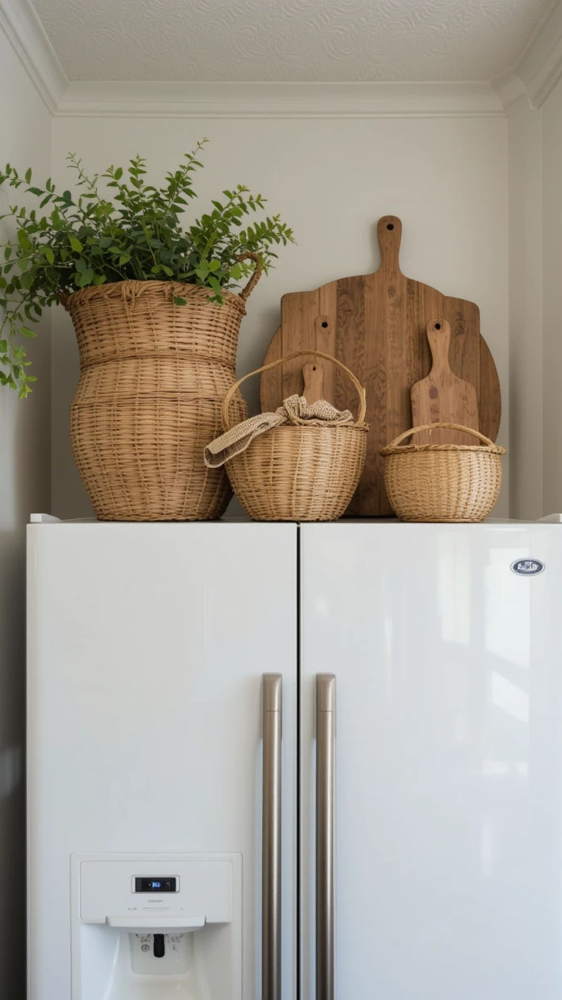
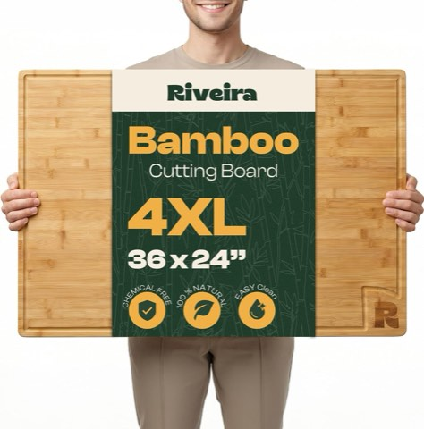
Riveira Extra Large Bamboo Cutting Board for Kitchen, 36" x 24", 0.8 Inch Thick – Large Wood Cutting Board with Juice Groove, Reversible Butcher Block Cutting Board for Meat, Bread & Charcuterie
Shop on Amazon7. Add a Small Plant
Bring a bit of greenery into the kitchen with a plant above the fridge.
If the spot gets decent light, use a real one. If not, a convincing faux plant saves you the drama of keeping something alive in an awkward corner.
Trailing plants work especially well here. Their leaves soften the hard lines of the fridge itself.
Consider trailing greenery, a small olive-style tree, faux eucalyptus, compact herbs if conditions allow, or any small leafy plant.
Keep it contained in a ceramic or woven planter.
You want it to soften the appliance, not turn the top of your fridge into a jungle expedition.
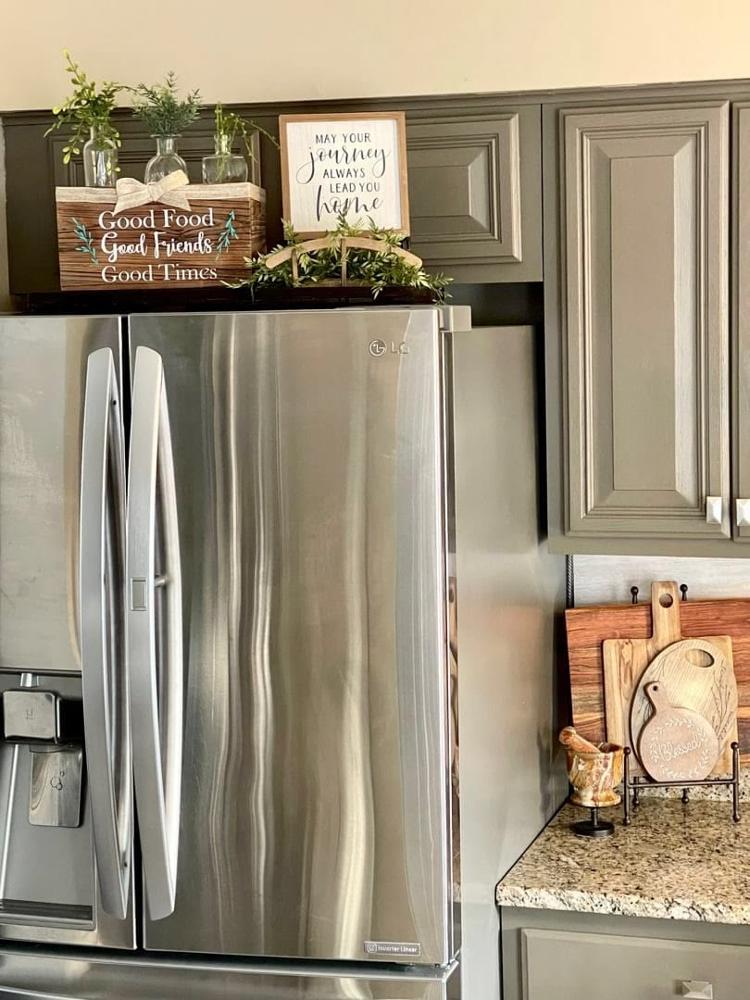
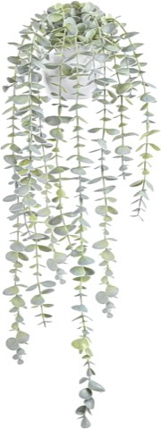
Decorative Hanging Plants for Shelf, Faux Ivy Eucalyptus Vine, Fake Greenery in White Bigger Pot (Light Green, 1PCS)
Shop on Amazon
Fake Pothos Hanging Plants - 33" Set of 2 Artificial Silk Ivy Vines with Pots, Realistic Faux Greenery for Indoor Home Office Bathroom Decor, Low Maintenance Hanging Plant Decoration - Golden Green
Shop on Amazon8. Display One Large Bowl
A large decorative bowl above the fridge creates an easy focal point without much styling effort.
Choose something with real character: handmade ceramics, wood, stoneware, a textured finish.
This works especially well with a lower ceiling or limited vertical space. One oversized piece reads as more sophisticated than several small accessories ever could.
Ask yourself honestly: five tiny objects, or one genuinely beautiful one?
Usually, the one wins.
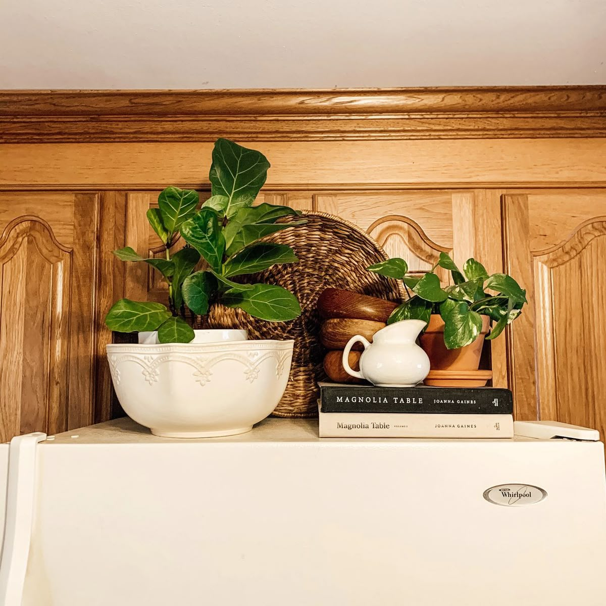

Ceramic Fruit Bowl,10.2" Decorative Bowl, Large Fruit Bowl for Kitchen Counter, Pedestal Bowl, Kitchen Counter Décor, Bread Candy Snacks Organizer(Magic Eye Blue)
Shop on Amazon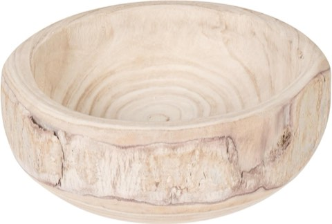
Bloomingville Decorative Hand-Carved Paulownia Wood Bowl, Whitewashed, 10.5 in Diameter, 4.25 in Tall
Shop on Amazon9. Style a Stack of Cookbooks
Cookbooks make surprisingly good decor above the fridge, since they bring color, texture, and personality all at once.
Pick two or three good-looking books and stack them horizontally. Top the stack with a small ceramic bowl or vase.
Don't use your entire cookbook collection here. Nobody needs a leaning tower of cookbooks threatening to slide onto their head every time the fridge opens.
Choose books that actually complement your kitchen's color palette instead.
In a neutral kitchen, look for cream covers, beige and tan tones, soft green, muted blue, natural brown.
In a colorful kitchen, let the books introduce one accent shade that already shows up somewhere else in the room.
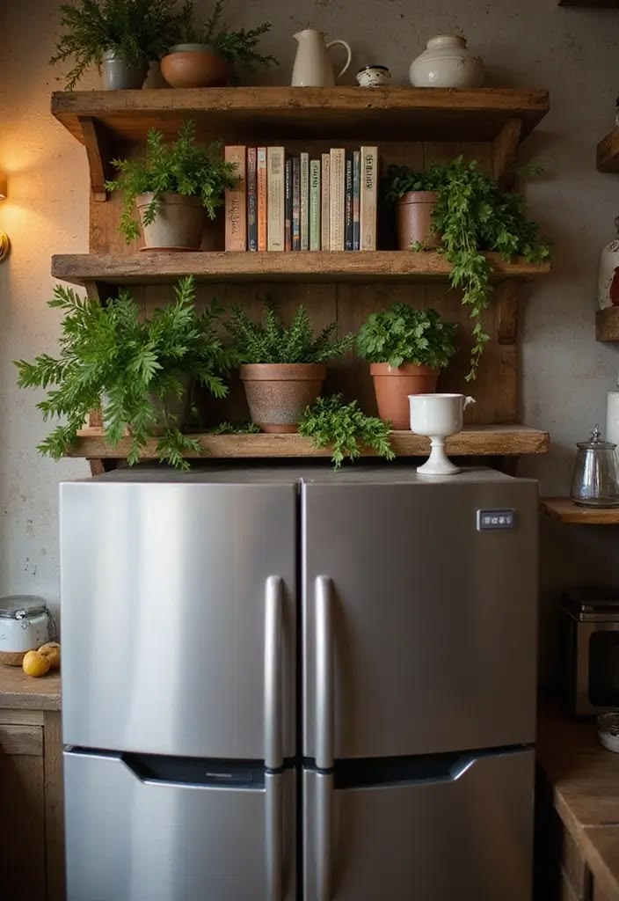
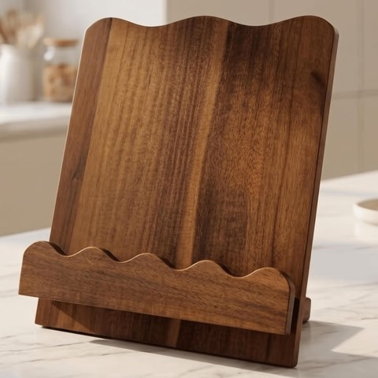
Beautiful Wooden Cookbook Stand for Your Kitchen Counter – Solid Wood Scalloped Book Holder (Acacia)
Shop on Amazon10. Set Up a Mini Coffee Station
Ever notice how coffee accessories multiply overnight on their own?
If you've got a larger space above the fridge, turn it into a small coffee-themed display.
A decorative coffee sign, a small basket, a couple of attractive mugs, or a vintage coffee tin all work. Keep it decorative rather than trying to build a fully functional station, unless you can safely reach everything up there.
A stack of good-looking coffee-table-style kitchen books adds height too.
For a cozy kitchen, combine warm wood, cream ceramics, and woven textures. It reads as a lot more intentional than just storing your coffee maker up there.
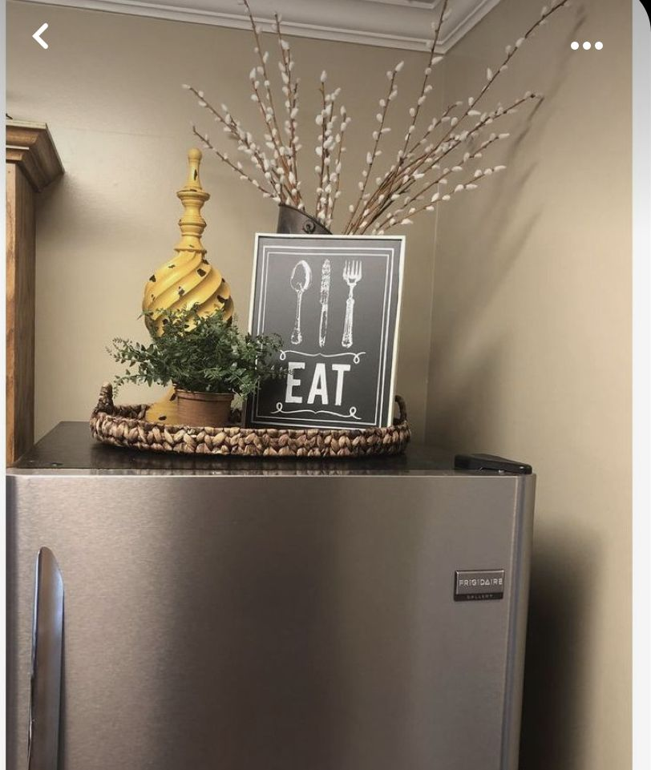
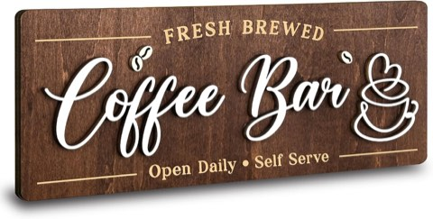
Coffee Bar Sign for Wall, Vintage Cafe Station Signs for Coffee Bar Decor
Shop on Amazon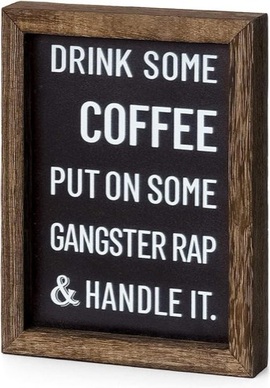
Mkono Coffee Bar Sign, 2 Sides Farmhouse Wood Sign with Funny Sayings Decor
Shop on Amazon11. Add a Decorative Tray
Want the kitchen to feel more polished? Try a tray above the fridge.
A large wooden, marble-look, metal, or woven tray creates a visual boundary for smaller objects. Instead of three unrelated pieces floating around up there, the tray gives them a home.
Try a small vase, a candle, a cookbook, or a decorative bowl sitting inside it.
Keep the arrangement simple: one taller item, one medium item, one smaller item.
Pair a ceramic vase with a small bowl and a folded kitchen towel, for example.
Why does this work? The tray turns it into one visual composition, instead of making your eye jump between a few unrelated objects.
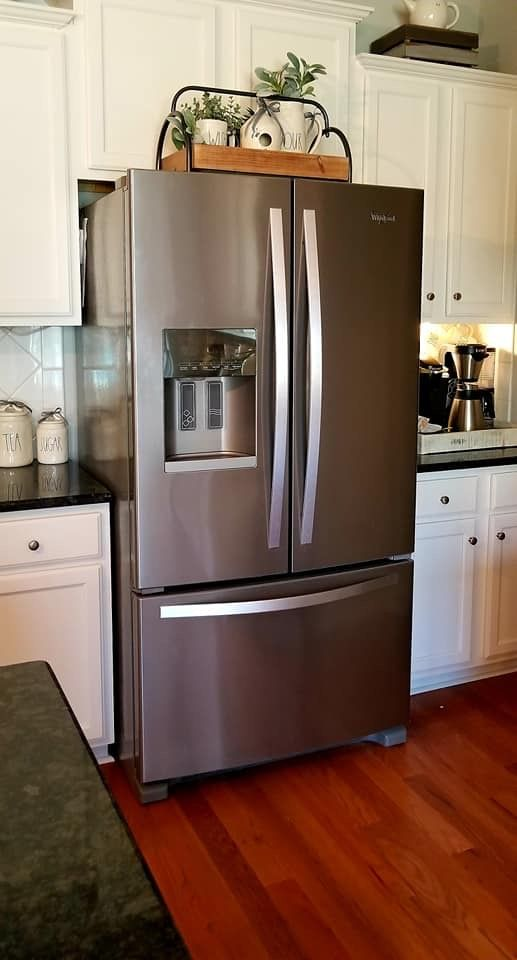
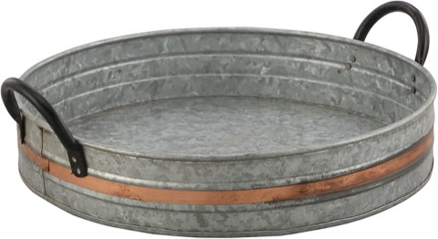
Galvanized Metal Serving Trays with Copper Strip and Iron Black Handles, Farmhouse Tray, Decorative Centerpiece for Coffee Table or Dining Table
Shop on Amazon12. Finish With a Woven Basket
A woven basket above the fridge gives you one of the easiest combinations of style and storage you'll find on this whole list.
This works especially well in farmhouse, coastal, cottage, rustic, and warm minimalist kitchens. Pick one basket that fits the width of the space, rather than filling the whole area with several tiny ones.
Use it for things you don't need every day: extra kitchen towels, seasonal napkins, reusable shopping bags, lightweight serving pieces.
Look for natural rattan or seagrass, a simple rectangular shape, neutral colors, a fitted or subtle lid, and enough depth to actually hide clutter.
The trick is hiding the practical stuff while keeping the texture visible. That's a genuine win-win.
If the basket is doing its job well, nobody visiting your kitchen should be able to guess what's actually tucked inside it.
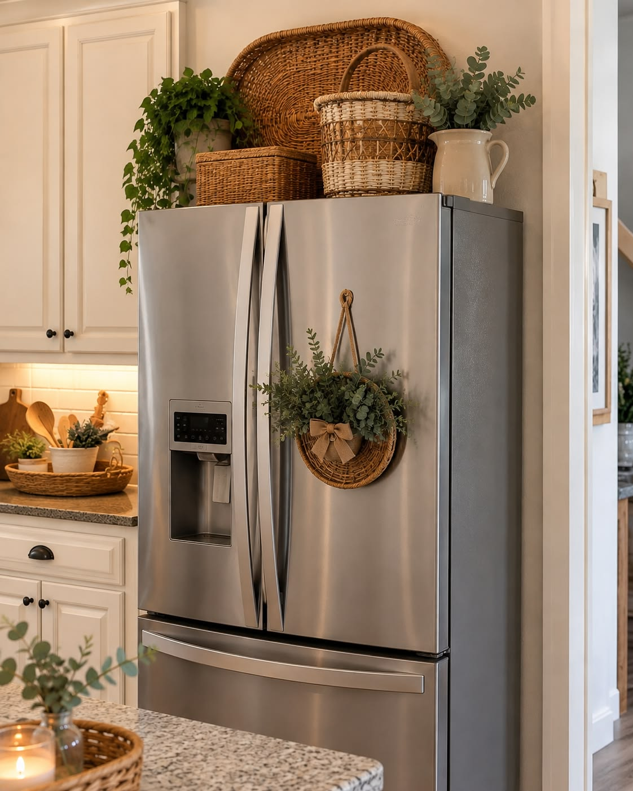

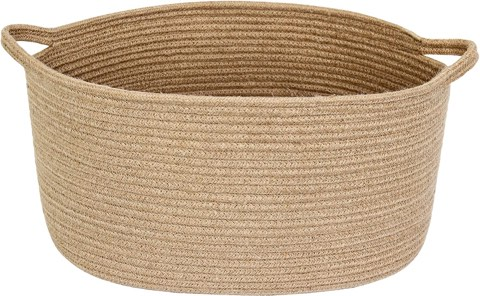
MEGASKET Jute Wicker Storage Basket with Handles, 17"x12"x8" Decorative Woven Baskets for Organizing Dog Toy, Gifts, Book, Towel, Cloth, Boho Storage Bin for Shelves, Entryway, Closet, Home Decor
Shop on AmazonCan You Actually Decorate Above a Fridge?
Absolutely, but check your refrigerator's installation requirements before you start.
Your fridge needs real clearance for proper ventilation, and different models need different amounts of space. Most manufacturers list a minimum top gap for their specific installation setup, and they're serious about it.
So before leaning a huge wooden box against the top of your appliance, go find the manual. Glamorous? Not particularly. Necessary? Very.
Most manufacturers are specific about this, usually a minimum gap measured in inches, sometimes different depending on whether anything sits directly above versus beside the unit.
It only takes a minute to check, and it's a lot cheaper than discovering the hard way that your fridge runs hotter than it should.
Once you've confirmed your clearance, you're free to start styling.
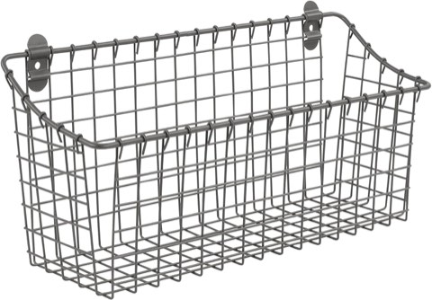
Spectrum Extra Large Wire Wall Mount Storage Basket Industrial Gray, Vintage Wire Basket Wall Mount Organizer Modern for Pantry Kitchen and Bath, Versatile Wall Mount Storage Basket Wire Caddy
Shop on Amazon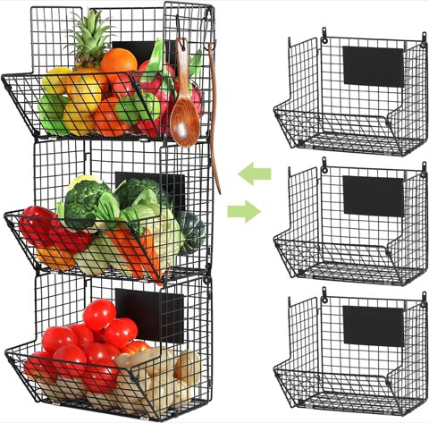
X-cosrack Metal Wire Basket Wall Mount, 3 Tier Wall Storage Basket Organizer with Hanging Hooks Chalkboards, Rustic Kitchen Fruit Produce Bin Rack Bathroom Tower Baskets (Black)
Shop on AmazonWhat Should You Actually Put Up There?
The best decor above the fridge depends on the size of the gap, the height of your fridge, and your kitchen's overall style.
A narrow space usually wants just one or two simple pieces. A larger area can handle baskets, artwork, cookbooks, or a full decorative tray.
Keep the visual weight light either way. The fridge already creates a big vertical block in the kitchen, and piling a mountain of stuff on top just makes the whole area feel crowded.
You don't need to fill every inch. You just need the space to feel intentional.
When in doubt, start smaller than you think you need to. It's a lot easier to add one more piece later than to walk back an arrangement that already feels crowded.
Start With One Piece
The space above your fridge doesn't have to become another clutter zone.
Done right, it turns into useful storage, a small decorative focal point, or just a quiet extension of your kitchen's personality.
Try a woven basket for texture. Cookbooks for color and personality. A wooden cutting board for warmth, a ceramic vase for softness, or a tray to corral the smaller pieces.
Most importantly: check your fridge's clearance requirements before you decorate anything. Your appliance's manual always takes priority over any styling idea on this list.
So if you've been staring up at that awkward gap wondering what to actually do with it, start small. Pick one beautiful piece, step back, and see how the kitchen feels.
You might genuinely find the real fix was never another cabinet after all. Just one well-chosen basket, and a little restraint.
Give yourself permission to live with it for a full week before deciding it's actually finished. Good styling usually needs that little bit of settling-in time to genuinely prove itself.